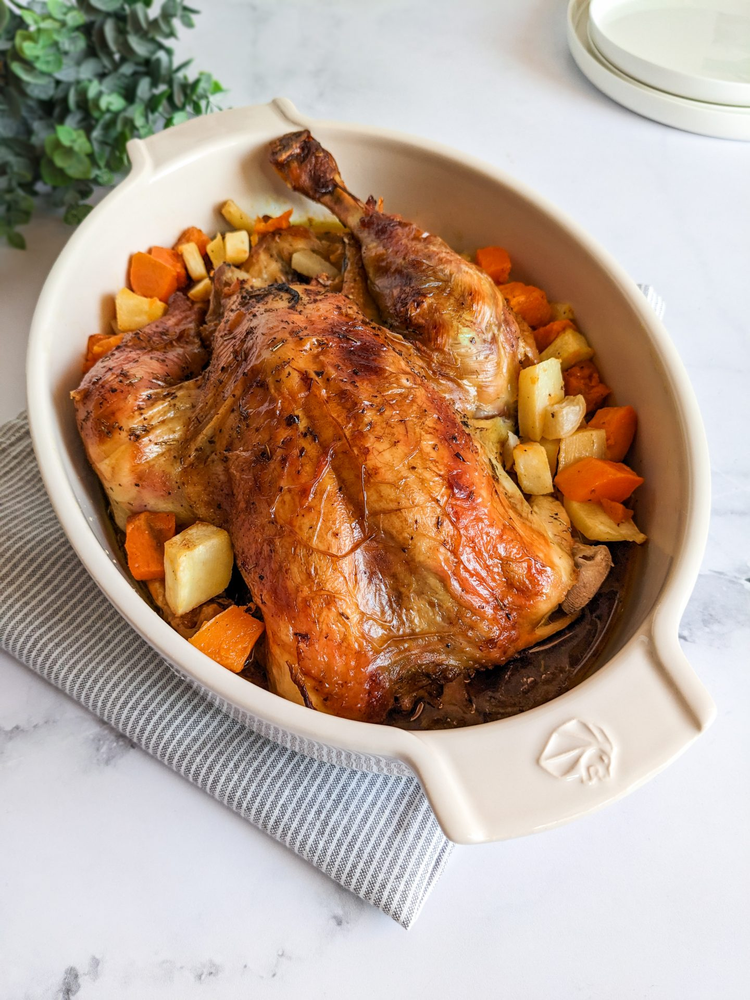

Recette du Poulet Rôti

Ingrédients :
Préparation :
- Préchauffez le four à 200°C (th.6-7).
- Salez et poivrez l’intérieur du poulet. Ajoutez 2 gousses d’ail écrasées, du thym et éventuellement un demi-citron à l’intérieur.
- Badigeonnez le poulet avec l’huile d’olive et le beurre fondu. Salez et poivrez la peau.
- Déposez le poulet dans un plat allant au four. Disposez les légumes coupés autour avec les deux autres gousses d’ail, du thym, sel et poivre.
- Enfournez pour environ 1h15 à 1h30 en arrosant régulièrement le poulet avec son jus.
- Si la peau brunit trop vite, couvrez avec du papier aluminium en cours de cuisson.
- Vérifiez la cuisson en piquant la cuisse : le jus qui s’en écoule doit être clair.
- Laissez reposer 10 minutes avant de découper et servir.
Retour à l'accueil